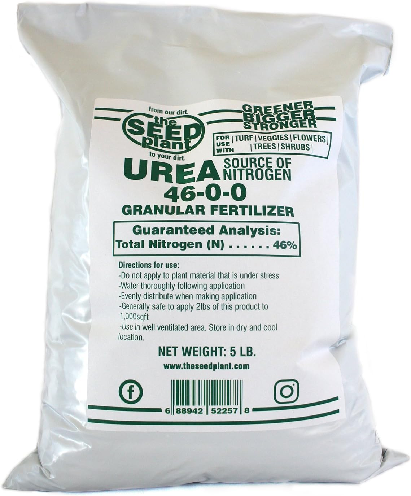

Description:
Urea is a nitrogenous fertilizer widely used in rice cultivation. It provides a high concentration of nitrogen, essential for the growth and development of rice plants. Urea promotes vigorous vegetative growth, increases tillering, and enhances leaf development.
- Content:
1. Nitrogen (N): 46%
2. Phosphorus (P): 0%
3. Potassium (K): 0%
- Points:
- High nitrogen content promotes lush green foliage.
- Suitable for application during the vegetative stage.
- Quick-release nitrogen source, requiring multiple applications throughout the growing season.